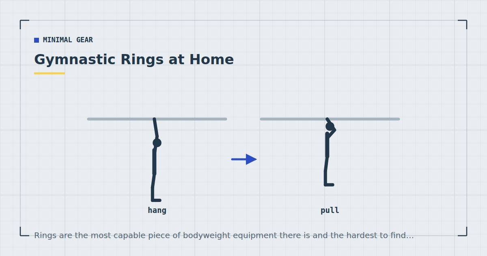

Minimal Gear
Gymnastic Rings at Home: Setup and First Workouts
Rings are the most capable piece of bodyweight equipment there is and the hardest to find somewhere to hang. The mounting problem decides whether they are right for you.

Gymnastic rings are two rings on adjustable straps. Hung from something solid, they cover essentially every upper-body movement pattern and a good deal of the lower body, at difficulties ranging from easy to genuinely elite.
They are also the piece of home equipment most often bought and never hung, because the mounting question is harder than the buying one.
Why rings are different
Two properties, and both come from the same source: the rings move.
Instability adds demand. A ring push-up is considerably harder than a floor push-up at the same body angle, because the stabilising muscles have to control two independently moving points. That means you get a harder exercise without needing a harder position.
The hands can rotate. Fixed bars lock your wrists and shoulders into one orientation. Rings let the joints find their own path, which many people find more comfortable, particularly for dips and pull-ups.
Infinite height adjustment. This is the underrated one. Lower the rings and a row becomes easier; raise your feet and it becomes harder. One piece of equipment covers the whole difficulty range for pulling, which is the pattern home training most struggles with — see rows at home.
The mounting problem
Rings need an anchor above head height that will take your full bodyweight plus dynamic load, and most flats do not have one.
Good anchors: an exposed structural joist or beam; a properly installed pull-up bar rated for the load; a doorway bar, with the caveats below; a sturdy tree branch outdoors; a garage rafter.
Not anchors: a suspended ceiling, plasterboard with nothing behind it, a curtain pole, a stair banister, a radiator pipe, or any beam you have not identified as structural.
Doorway bars: rings can hang from a leverage-mount bar, but with an important limitation. Those bars grip because your weight rotates them into the wall, and the grip fails the moment force goes upward or forward. Rings swing, which introduces exactly that kind of force. Keep ring work on a doorway bar strictly static and controlled — rows, supported holds, assisted work — and never anything swinging or explosive. The mechanism is explained in the doorway pull-up bar guide.
A ceiling mount must go into structural timber, not plasterboard, and the fixing must be rated for well above your bodyweight because dynamic loads exceed static ones substantially. If you are not certain what is above the plaster, do not guess — a failure here drops you from height onto a hard floor. This is one of the few home training questions where paying someone competent is a reasonable choice.
Setting the height
Ring height determines difficulty, which is most of their value.
Waist height for rows, with your feet forward. The lower the rings relative to you, the harder the row.
Chest to shoulder height for ring push-ups with your feet on the floor. Lower rings mean a more horizontal body and a harder exercise.
Above head height for pull-ups, dips and hanging work.
Adjustable straps mean one setup covers all of these, but changing height takes a minute, so group exercises by height within a session rather than alternating.
Safety
Beyond the mounting question, three points.
Check the straps and buckles before every session. Fraying at the buckle is the failure point.
Clear the space below and around. Rings swing, and you will occasionally come off them unexpectedly.
Progress slowly, particularly on dips. Ring dips place substantial demand on the shoulders in a position with no lateral support. This is the exercise where people most often get hurt on rings, and it should come well after fixed-bar dips are comfortable — see dips at home.
What you can train
Pull: rows at any difficulty, pull-ups, chin-ups, and eventually front lever progressions. This is where rings earn their place.
Push: ring push-ups, dips, and eventually ring support holds. All harder than their fixed equivalents at the same position.
Core: ring fallouts, which are essentially a rollout with the load at the other end — see the ab wheel progression for the same movement pattern.
Legs: assisted pistol squats using the rings for balance, and ring-supported split squats. Useful, though legs are better served by bodyweight single-leg work.
A first month
Twice a week, alongside your normal training rather than replacing it. Everything static and controlled.
Weeks 1–2: ring support hold (arms straight, rings at hip height, feet on the floor taking some weight) 3 × 20 seconds. Ring rows with feet back, 3 × 10–12. Ring push-ups with rings at chest height, 3 × 8–12.
Weeks 3–4: same exercises, harder positions. Feet further forward on rows, rings lower for push-ups, support hold with less weight through the feet. Add ring fallouts, 3 × 6–10.
Do not attempt ring dips, muscle-ups or anything swinging in the first month. The wrist and elbow tissue needs time to adapt to the instability, and rushing this is the most common route to elbow irritation.
Progression follows the same levers as any bodyweight work: get closer to failure, slow the tempo, change the leverage. Light loads taken close to failure produce comparable adaptation to heavy ones,1 and weekly volume drives the result.2
The rings are cheap. Finding somewhere to hang them is the actual purchase.
Who they actually suit
Worth it if: you have a solid anchor point — a garage, a garden tree, exposed joists, or a wall-mounted bar; you are past the beginner stage and can already do ten push-ups and several rows; and you want a single piece of equipment that scales from easy to extremely hard.
Not worth it if: you have no anchor other than a leverage-mount doorway bar, in which case a suspension trainer is the more sensible purchase — see suspension trainers at home. Or if you are still working through the incline push-up ladder, in which case the free progressions are far from exhausted.
For most people in flats, the honest answer is that rings are the better tool and a suspension trainer or a set of bands is the more practical one. That is a mounting constraint rather than a merit one, and it is worth being clear about which is deciding your purchase — the priority order is in the minimalist home gym guide.
Where to go next
For the more practical alternative in a flat, see suspension trainers at home. For the free version of everything rings do for pulling, see rows at home.
Frequently asked questions
Where can I hang gymnastic rings at home?
From an exposed structural joist or beam, a properly installed wall-mounted pull-up bar, a sturdy tree branch, or a garage rafter. Not from a suspended ceiling, plasterboard, a curtain pole, a banister or any beam you have not identified as structural.
Can you hang rings from a doorway pull-up bar?
For static, controlled work only. Leverage-mount bars grip because your weight rotates them into the wall, and that grip fails the moment force goes upward or forward. Rings swing, which produces exactly that force, so keep the work strictly static.
Are gymnastic rings good for beginners?
Not as a first purchase. Rings are harder than fixed equivalents because the stabilising muscles must control two moving points. Be able to do ten push-ups and several rows first, and spend the first month on static holds and rows only.
What can you train with gymnastic rings?
Rows at any difficulty, pull-ups, dips, push-ups, support holds, fallouts and eventually front lever progressions. The infinite height adjustment means one piece of equipment covers the whole difficulty range for pulling.
Are rings or a suspension trainer better?
Rings are more capable; suspension trainers are more practical in a flat, because they are designed to anchor over a door without a structural fixing. For most people the mounting constraint rather than the merit decides it.
Why do my elbows hurt from ring training?
Usually from progressing too fast in the first weeks. Wrist and elbow tissue needs time to adapt to the instability, and rushing that is the most common route to elbow irritation. Reduce volume and build up more slowly.
Sources and further reading
- Schoenfeld BJ, Grgic J, Ogborn D, Krieger JW. “Strength and Hypertrophy Adaptations Between Low- vs. High-Load Resistance Training: A Systematic Review and Meta-analysis.” Journal of Strength and Conditioning Research, 2017;31(12):3508–3523. PubMed.
- Schoenfeld BJ, Ogborn D, Krieger JW. “Dose-response relationship between weekly resistance training volume and increases in muscle mass: A systematic review and meta-analysis.” Journal of Sports Sciences, 2017;35(11):1073–1082. PubMed.
- NHS. Strength and Flex exercise plan.
- World Health Organization. WHO Guidelines on Physical Activity and Sedentary Behaviour. 2020.
Comments
Comments are not enabled yet. Add a hosted comment embed (Disqus, Commento, Giscus) inside this container when you are ready.